2025.03
한국채색화협회 단체전
모란보자기 · Peony Bojagi
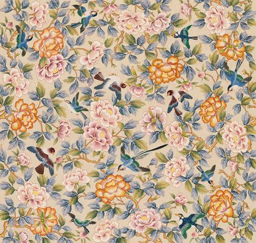
나의 작업은 전통의 흔적 속에서 현재의 호흡을 찾는 여정이다. 꽃과 새, 책과 기물, 그리고 연잎과 원앙은 오래전부터 길상과 삶의 지혜를 상징해 왔다. 나는 이 상징들을 빌려 오늘을 살아가는 우리가 여전히 꿈꾸는 풍요와 평안, 아름다움을 이야기하고자 한다.
나는 전통 회화의 문법을 따르면서도, 그것을 단순한 복원이 아니라 동시대적 시선 속에서 재해석하려 한다. 이는 과거와 현재가 서로 대화하고, 그 속에서 새로운 미감을 피워내는 과정이다.
나의 그림은 '현재의 나'를 비추는 거울이다. 익숙하면서도 낯선, 풍성한 이 그림 속에서 보는 이 또한 자신의 이야기를 발견하길 바란다.
Artist Statement — EN
My work is a journey to find the breath of the present within the traces of tradition. Flowers and birds, books and vessels, lotus leaves and mandarin ducks have long symbolized good fortune and the wisdom of life. Through these symbols I want to speak of the abundance, peace, and beauty we, living today, still dream of.
I follow the grammar of traditional painting, yet try to reinterpret it not as mere restoration but through a contemporary gaze — a process in which past and present converse, and from that conversation a new sensibility blooms.
My paintings are a mirror reflecting the "self of the present." Familiar yet unfamiliar, abundant in this way, I hope the viewer, too, discovers their own story within them.

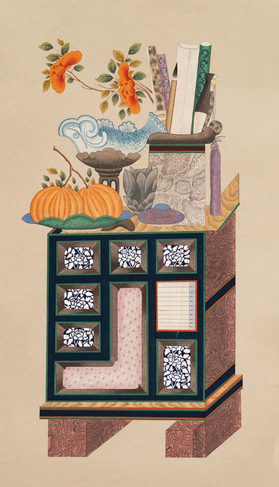
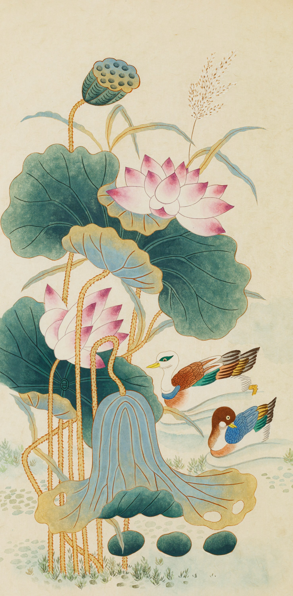
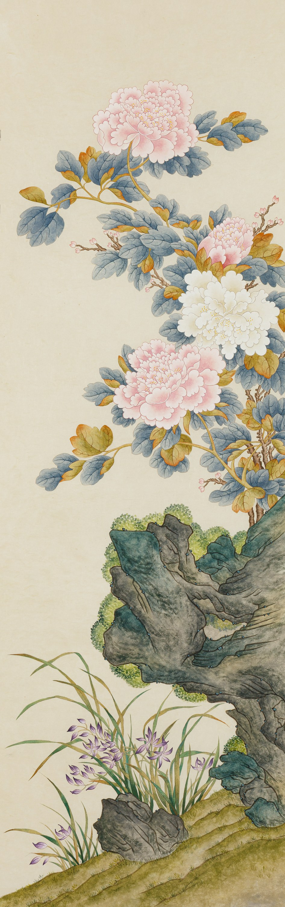
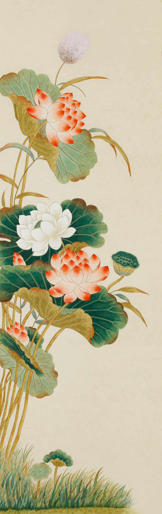
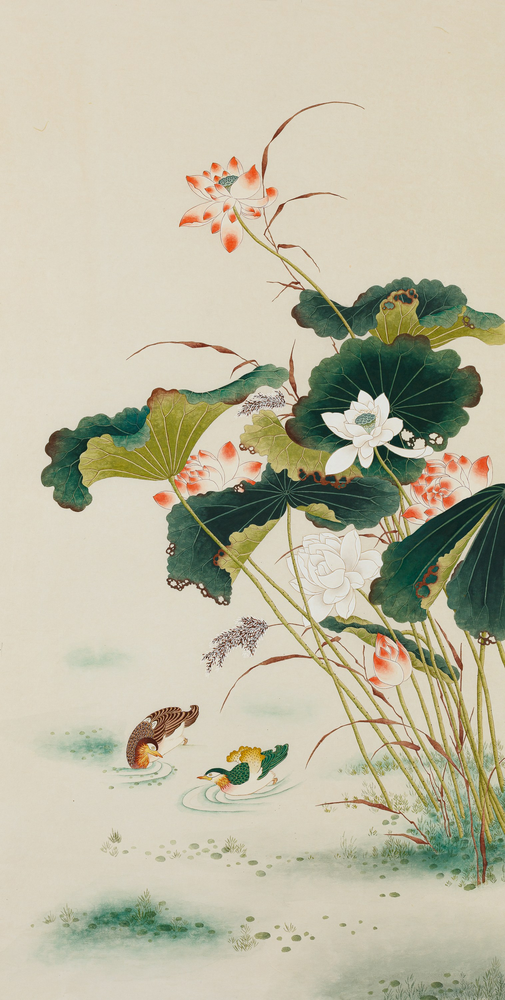
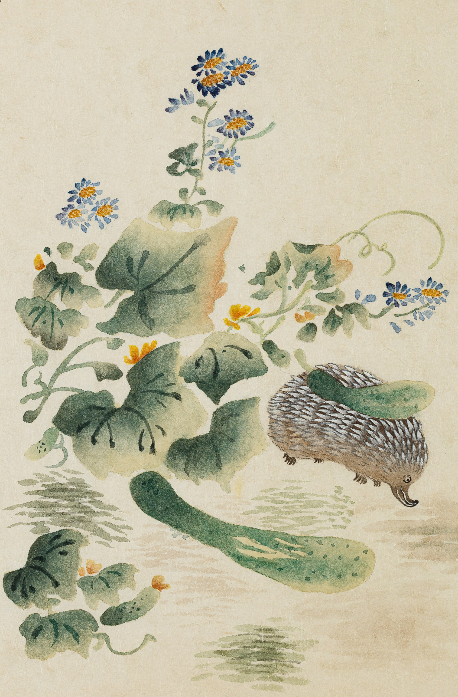
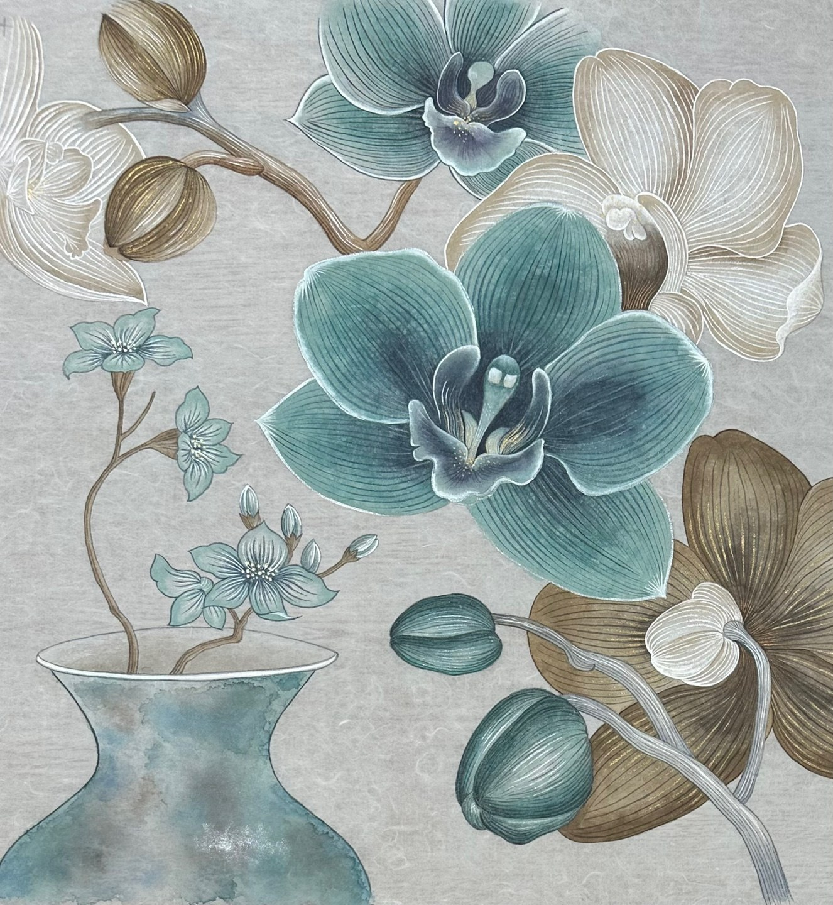

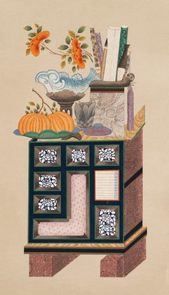
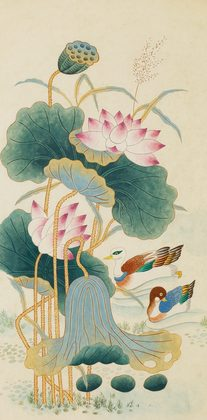
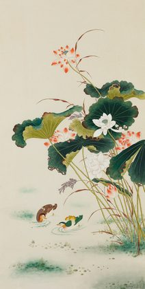
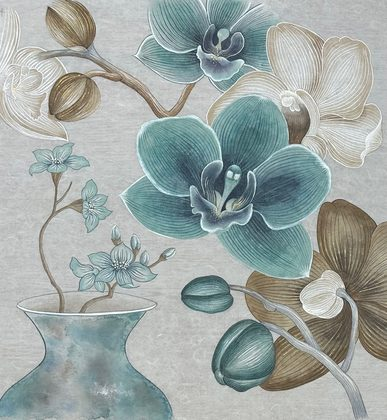
서울대학교 미술대학 산업디자인과 학사
BFA Industrial Design, Seoul National University
Rhode Island School of Design, Graphic Design 전공 학사
BFA Graphic Design, RISD
줄리 김수진 작가 사사
Studied minhwa under artist Julie Soojin Kim